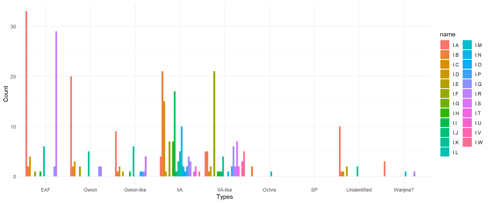
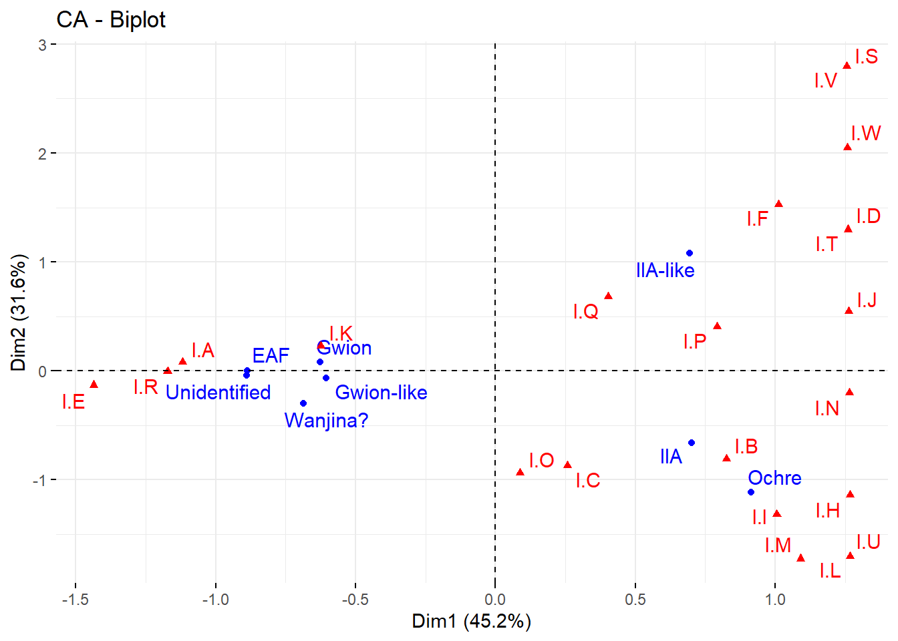
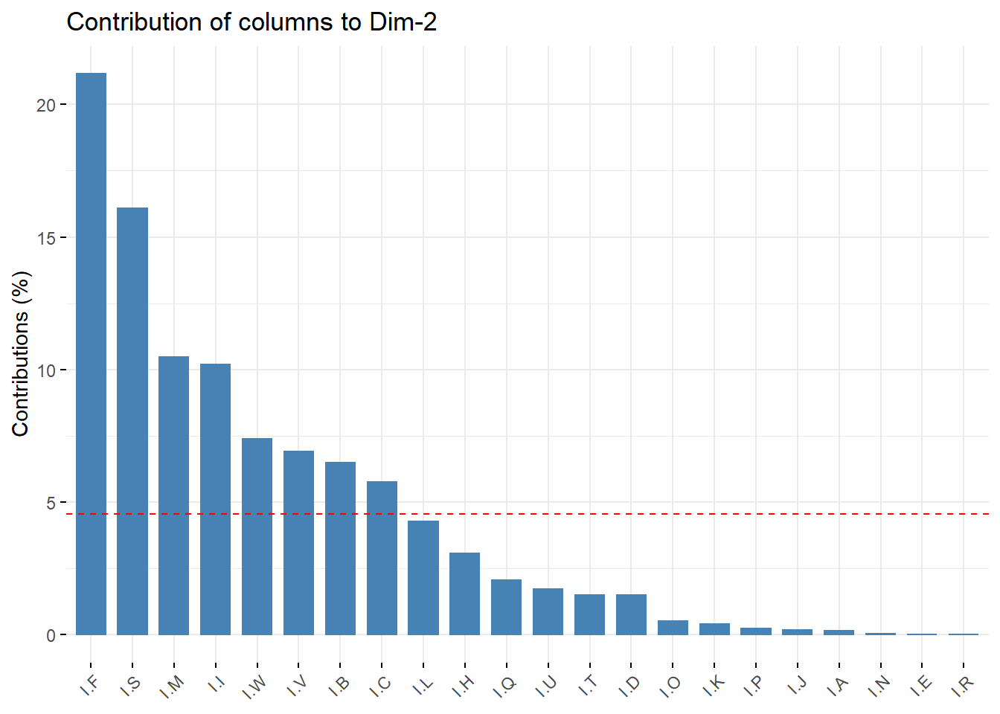
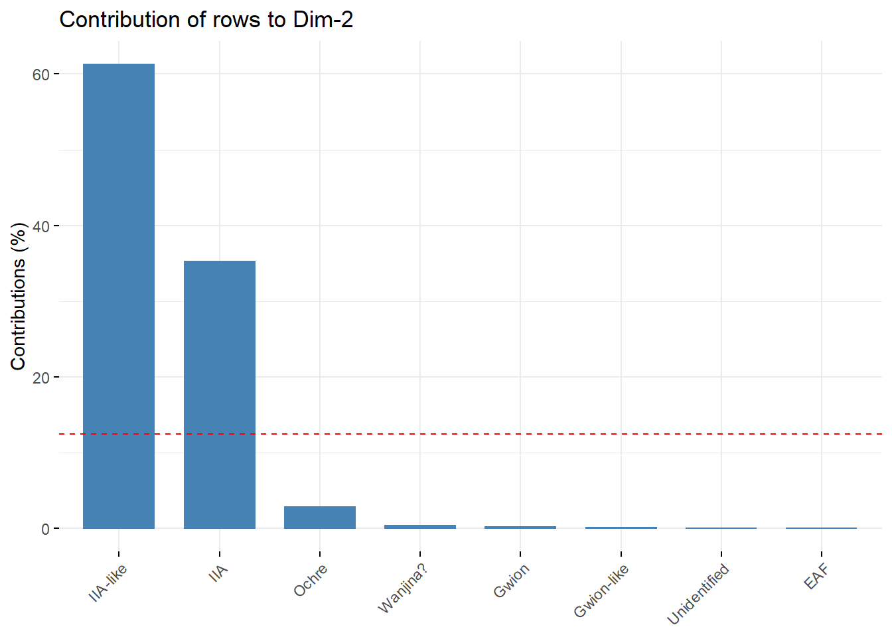
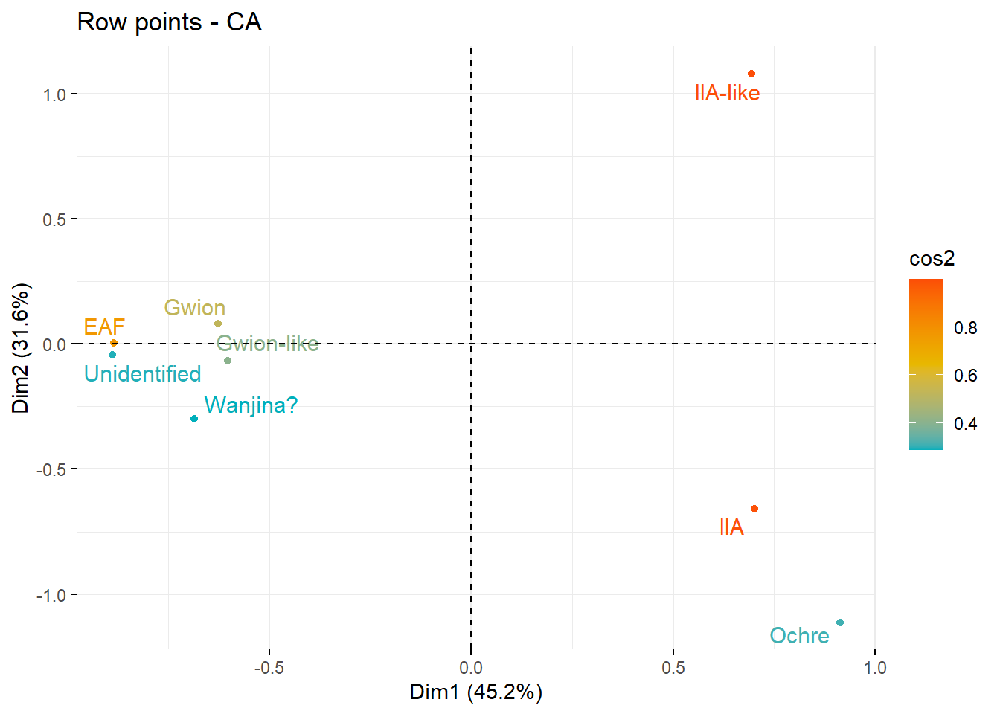
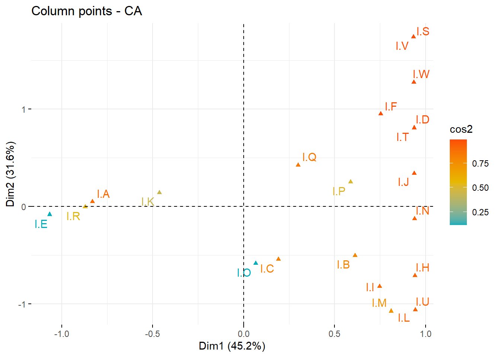
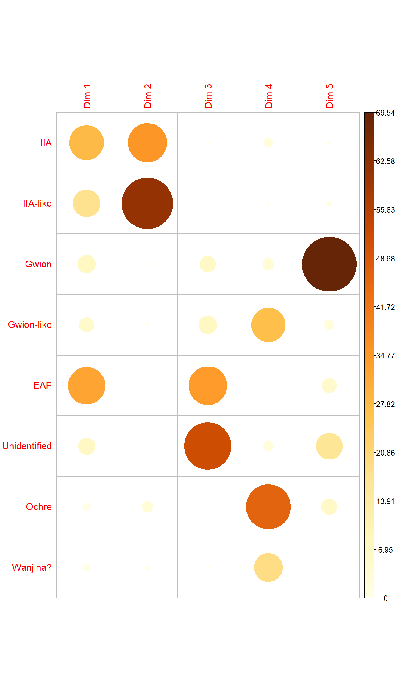

CA
Philipp Bayer
2022-09-13
Last updated: 2022-09-14
Checks: 7 0
Knit directory: rockart_mca_ca/
This reproducible R Markdown analysis was created with workflowr (version 1.7.0). The Checks tab describes the reproducibility checks that were applied when the results were created. The Past versions tab lists the development history.
Great! Since the R Markdown file has been committed to the Git repository, you know the exact version of the code that produced these results.
Great job! The global environment was empty. Objects defined in the global environment can affect the analysis in your R Markdown file in unknown ways. For reproduciblity it’s best to always run the code in an empty environment.
The command set.seed(20220913) was run prior to running
the code in the R Markdown file. Setting a seed ensures that any results
that rely on randomness, e.g. subsampling or permutations, are
reproducible.
Great job! Recording the operating system, R version, and package versions is critical for reproducibility.
Nice! There were no cached chunks for this analysis, so you can be confident that you successfully produced the results during this run.
Great job! Using relative paths to the files within your workflowr project makes it easier to run your code on other machines.
Great! You are using Git for version control. Tracking code development and connecting the code version to the results is critical for reproducibility.
The results in this page were generated with repository version ac0a0ea. See the Past versions tab to see a history of the changes made to the R Markdown and HTML files.
Note that you need to be careful to ensure that all relevant files for
the analysis have been committed to Git prior to generating the results
(you can use wflow_publish or
wflow_git_commit). workflowr only checks the R Markdown
file, but you know if there are other scripts or data files that it
depends on. Below is the status of the Git repository when the results
were generated:
Ignored files:
Ignored: .Rhistory
Ignored: .Rproj.user/
Note that any generated files, e.g. HTML, png, CSS, etc., are not included in this status report because it is ok for generated content to have uncommitted changes.
These are the previous versions of the repository in which changes were
made to the R Markdown (analysis/CA.Rmd) and HTML
(docs/CA.html) files. If you’ve configured a remote Git
repository (see ?wflow_git_remote), click on the hyperlinks
in the table below to view the files as they were in that past version.
| File | Version | Author | Date | Message |
|---|---|---|---|---|
| Rmd | ac0a0ea | Philipp Bayer | 2022-09-14 | workflowr::wflow_publish("analysis/CA.Rmd") |
| html | b9d3020 | Philipp Bayer | 2022-09-13 | Build site. |
| Rmd | f973ee7 | Philipp Bayer | 2022-09-13 | wflow_publish("analysis/CA.Rmd") |
| html | c713ead | Philipp Bayer | 2022-09-13 | Build site. |
| Rmd | 886692f | Philipp Bayer | 2022-09-13 | wflow_publish("./analysis/CA.Rmd") |
Introduction
Here, we run through a standard CA. The code is mostly based on https://rentzb.github.io/post/ca/ using the FactoMineR package.
library(tidyverse)── Attaching packages ─────────────────────────────────────── tidyverse 1.3.1 ──✔ ggplot2 3.3.6 ✔ purrr 0.3.4
✔ tibble 3.1.7 ✔ dplyr 1.0.9
✔ tidyr 1.2.0 ✔ stringr 1.4.0
✔ readr 2.1.2 ✔ forcats 0.5.1── Conflicts ────────────────────────────────────────── tidyverse_conflicts() ──
✖ dplyr::filter() masks stats::filter()
✖ dplyr::lag() masks stats::lag()library(FactoMineR)Warning: package 'FactoMineR' was built under R version 4.2.1library(factoextra)Warning: package 'factoextra' was built under R version 4.2.1Welcome! Want to learn more? See two factoextra-related books at https://goo.gl/ve3WBalibrary(gplots)Warning: package 'gplots' was built under R version 4.2.1
Attaching package: 'gplots'The following object is masked from 'package:stats':
lowesslibrary(corrplot)corrplot 0.92 loaded#install.packages(c('gplots', 'factoextra', 'FactoMineR'))For CA we need to make a contingency table, the number of responses/possible values for each level for each variable (column).
We have one already.
#df <- readxl::read_xlsx('./data/MCA_Macropods_Data.xlsx', sheet = 'Macropods_Complete ind')
df <- read.csv('data/CA_macropods.csv', row.names = 1)
head(df) I.A I.B I.C I.D I.E I.F I.G I.H I.I I.J I.K I.L I.M I.N I.O I.P
IIA 4 21 15 1 0 7 0 7 17 1 3 5 10 2 1 2
IIA-like 5 5 1 2 0 21 0 1 1 1 4 0 0 1 0 2
Gwion 20 2 3 0 0 2 0 0 0 0 5 0 0 0 0 0
Gwion-like 9 1 2 0 1 0 0 0 1 0 6 0 0 0 1 1
EAF 33 2 4 0 0 1 0 0 1 0 6 0 0 0 0 0
Unidentified 10 1 1 0 2 0 0 0 0 0 2 0 0 0 0 0
I.Q I.R I.S I.T I.U I.V I.W
IIA 4 3 0 1 2 0 1
IIA-like 6 2 7 2 0 3 5
Gwion 2 2 0 0 0 0 0
Gwion-like 1 4 0 0 0 0 0
EAF 2 29 0 0 0 0 0
Unidentified 0 0 0 0 0 0 0df %>% as_tibble(rownames = 'Types') %>%
pivot_longer(-Types) %>%
ggplot(aes(x=Types, y=value, fill=name)) +
geom_col(position='dodge') +
ylab('Count') +
theme_minimal()
Let’s make a correlation plot too.
balloonplot(as.table(as.matrix(df)), main='Types', xlab='', ylab='',
label = FALSE, show.margins=FALSE)
Some clear correlations there - I.B with IIA, I.C with IIA, I.F with IIA-like (so IIA and IIA-like are quite different!)
Running the CA
domains.CA <- CA(df, graph=F)Warning in CA(df, graph = F): The rows SP sum at 0. They were suppressed from
the analysisWarning in CA(df, graph = F): The columns I.G sum at 0. They were suppressed
from the analysissummary(domains.CA)
Call:
CA(X = df, graph = F)
The chi square of independence between the two variables is equal to 416.8116 (p-value = 1.195526e-27 ).
Eigenvalues
Dim.1 Dim.2 Dim.3 Dim.4 Dim.5 Dim.6 Dim.7
Variance 0.553 0.386 0.144 0.057 0.039 0.032 0.011
% of var. 45.217 31.612 11.763 4.693 3.179 2.603 0.931
Cumulative % of var. 45.217 76.829 88.593 93.286 96.465 99.069 100.000
Rows
Iner*1000 Dim.1 ctr cos2 Dim.2 ctr cos2
IIA | 292.786 | 0.701 27.884 0.526 | -0.659 35.262 0.465 |
IIA-like | 334.636 | 0.694 17.631 0.291 | 1.082 61.287 0.708 |
Gwion | 79.998 | -0.627 7.503 0.518 | 0.081 0.179 0.009 |
Gwion-like | 71.651 | -0.604 5.221 0.403 | -0.066 0.090 0.005 |
EAF | 232.069 | -0.886 32.485 0.774 | 0.003 0.001 0.000 |
Unidentified | 124.675 | -0.888 6.697 0.297 | -0.043 0.022 0.001 |
Ochre | 58.196 | 0.913 1.328 0.126 | -1.113 2.820 0.187 |
Wanjina? | 28.311 | -0.687 1.251 0.244 | -0.299 0.339 0.046 |
Dim.3 ctr cos2
IIA -0.024 0.124 0.001 |
IIA-like -0.013 0.024 0.000 |
Gwion 0.284 5.936 0.107 |
Gwion-like 0.373 7.646 0.153 |
EAF -0.465 34.402 0.213 |
Unidentified 1.258 51.604 0.595 |
Ochre 0.036 0.008 0.000 |
Wanjina? -0.158 0.256 0.013 |
Columns (the 10 first)
Iner*1000 Dim.1 ctr cos2 Dim.2 ctr cos2
I.A | 189.791 | -0.831 30.753 0.896 | 0.049 0.155 0.003 |
I.B | 79.090 | 0.613 6.780 0.474 | -0.501 6.485 0.317 |
I.C | 30.795 | 0.191 0.502 0.090 | -0.540 5.747 0.721 |
I.D | 13.641 | 0.937 1.396 0.566 | 0.807 1.482 0.420 |
I.E | 86.881 | -1.067 1.813 0.115 | -0.082 0.015 0.001 |
I.F | 134.032 | 0.752 9.311 0.384 | 0.948 21.150 0.610 |
I.H | 35.594 | 0.942 3.763 0.584 | -0.710 3.061 0.332 |
I.I | 79.613 | 0.748 5.934 0.412 | -0.819 10.184 0.494 |
I.J | 6.054 | 0.938 0.934 0.852 | 0.340 0.176 0.112 |
I.K | 41.266 | -0.464 2.971 0.398 | 0.142 0.397 0.037 |
Dim.3 ctr cos2
I.A 0.177 5.358 0.041 |
I.B 0.060 0.249 0.005 |
I.C 0.063 0.213 0.010 |
I.D -0.044 0.012 0.001 |
I.E 2.538 39.426 0.652 |
I.F -0.029 0.052 0.001 |
I.H -0.059 0.058 0.002 |
I.I -0.067 0.185 0.003 |
I.J -0.049 0.010 0.002 |
I.K 0.330 5.791 0.202 |That’s a very tiny p-value, so there is a statistically significant association between the rows and columns (the two groups).
We also see that the cumulative % of variance explained is very good, with two dimensions we already have 76.8% explained in total. Let’s plot the dimensions’ variance explained:
fviz_screeplot(domains.CA,addlabels=T) +
geom_hline(yintercept=12.5,linetype=2,color="red")
I added a y-intercept based on the expected eigenvalue if data were random: 1/(nrow(df)-1) * 100 = 12.5. Dimension 3 is just too low at 11.8% where the cutoff is 12.5%. So we can be confident to look only at the first two dimensions.
Let’s make a regular CA plot to see how they cluster:
fviz_ca_biplot(domains.CA,repel=T)
For the columns in blue, we can see IIA-like on its own in the top right, IIA and Oche on their own bottom right, and the rest clusters on the left.
Let’s see whether there’s differences between rows and columns - from the fviz_ca_biplot manual:
’The default plot of (M)CA is a “symmetric” plot in which both rows and columns are in principal coordinates. In this situation, it’s not possible to interpret the distance between row points and column points. To overcome this problem, the simplest way is to make an asymmetric plot. This means that, the column profiles must be presented in row space or vice-versa. The allowed options for the argument map are:
“rowprincipal” or “colprincipal”: asymmetric plots with either rows in principal coordinates and columns in standard coordinates, or vice versa. These plots preserve row metric or column metric respectively.’
fviz_ca_biplot(domains.CA,repel=T,map="rowprincipal")
fviz_ca_biplot(domains.CA,repel=T,map="colprincipal")Both plots don’t look that different to me - the overall clusters are retained.
Contribution of rows and columns
What contributes to axis 1? By column:
fviz_contrib(domains.CA, choice="col",axes=1)
So I.A contributes the most to the column-wise distribution.
By row:
fviz_contrib(domains.CA, choice="row",axes=1)
EAF contributes the most. Look at the above biplot - EAF and IA are together on the left.
What contributes to axis 2?
fviz_contrib(domains.CA, choice="col",axes=2)
I.F and I.S do.
fviz_contrib(domains.CA, choice="row",axes=2)
IIA-like does and IIA do. Again, look at the above biplot - I.F. and IIA-like and I.S are together on the top right, IIA is on the bottom right.
Quality of fit
Not all points are automatically well-represented in two dimensions. Some points get drawn out better than others.
We can calculate the cos2 for each item, if an item is well represented in both dimensions then cos = 1, if it’s terrible then cos = 0.
First the rows:
fviz_ca_row(domains.CA, col.row = "cos2",
gradient.cols = c("#00AFBB", "#E7B800", "#FC4E07"),
repel = TRUE)
Unidentified and Wanjina? and Ochre look worrying, the rest looks good.
fviz_ca_col(domains.CA, col.col = "cos2",
gradient.cols = c("#00AFBB", "#E7B800", "#FC4E07"),
repel = TRUE) I.E. and I.O look bad, the rest looks good.
Correlation plots
Let’s make another correlation plot, but this time between row items and Dim1/Dim2.
row <- get_ca_row(domains.CA)
corrplot(row$cos2, is.corr = FALSE)
This is another way of looking what we had above. We have the default 5 dimensions here, but Dim 3 to Dim 5 don’t contribute much and could be ignored.
corrplot(row$cos2[,c('Dim 1', 'Dim 2')], is.corr = FALSE)
Contribution
We can also make those correlation plots looking at what each row contributes to each dimension.
corrplot(row$contrib, is.corr=FALSE)Interestingly, Gwion contributes a lot to dimension 5?
Again, using only the two dimensions:
corrplot(row$contrib[, c('Dim 1', 'Dim 2')], is.corr=FALSE)Let’s add the contribution to our previous scatter plot:
fviz_ca_row(domains.CA, col.row = "contrib",
gradient.cols = c("#00AFBB", "#E7B800", "#FC4E07"),
repel = TRUE) Now the dots are colored by how much they contribute to the dimensions.
Clustering
We can also cluster our rows using hierarchical clustering.
This currently breaks with this error:
Error in if (aux2 > aux3) aux4 <- phyper(donnee[j, k] - 1, marge.col[k], : missing value where TRUE/FALSE needed
domains.CA.cluster <- HCPC(domains.CA,nb.clust=-1,graph=F)We can make a grubbier one using PCA.
pca_cluster <- HCPC(PCA(df), nb.clust = -1, graph=F)Warning: ggrepel: 6 unlabeled data points (too many overlaps). Consider
increasing max.overlapsfviz_cluster(pca_cluster,
repel = TRUE,
show.clust.cent = TRUE,
palette = "jco",
ggtheme = theme_minimal(),
main = "Factor map (PCA)"
)Warning: ggrepel: 3 unlabeled data points (too many overlaps). Consider
increasing max.overlapsThis is PCA, NOT CA, but I expect the clustering graph of CA to look very similar.
sessionInfo()R version 4.2.0 (2022-04-22 ucrt)
Platform: x86_64-w64-mingw32/x64 (64-bit)
Running under: Windows 10 x64 (build 19044)
Matrix products: default
locale:
[1] LC_COLLATE=English_Australia.utf8 LC_CTYPE=English_Australia.utf8
[3] LC_MONETARY=English_Australia.utf8 LC_NUMERIC=C
[5] LC_TIME=English_Australia.utf8
attached base packages:
[1] stats graphics grDevices utils datasets methods base
other attached packages:
[1] corrplot_0.92 gplots_3.1.3 factoextra_1.0.7 FactoMineR_2.6
[5] forcats_0.5.1 stringr_1.4.0 dplyr_1.0.9 purrr_0.3.4
[9] readr_2.1.2 tidyr_1.2.0 tibble_3.1.7 ggplot2_3.3.6
[13] tidyverse_1.3.1 workflowr_1.7.0
loaded via a namespace (and not attached):
[1] bitops_1.0-7 fs_1.5.2 lubridate_1.8.0
[4] httr_1.4.3 ggsci_2.9 rprojroot_2.0.3
[7] tools_4.2.0 backports_1.4.1 bslib_0.3.1
[10] utf8_1.2.2 R6_2.5.1 DT_0.23
[13] KernSmooth_2.23-20 DBI_1.1.2 colorspace_2.0-3
[16] withr_2.5.0 tidyselect_1.1.2 processx_3.5.3
[19] emmeans_1.7.5 compiler_4.2.0 git2r_0.30.1
[22] cli_3.3.0 rvest_1.0.2 flashClust_1.01-2
[25] xml2_1.3.3 labeling_0.4.2 sass_0.4.1
[28] caTools_1.18.2 scales_1.2.0 mvtnorm_1.1-3
[31] callr_3.7.0 multcompView_0.1-8 digest_0.6.29
[34] rmarkdown_2.14 pkgconfig_2.0.3 htmltools_0.5.2
[37] highr_0.9 dbplyr_2.1.1 fastmap_1.1.0
[40] htmlwidgets_1.5.4 rlang_1.0.2 readxl_1.4.0
[43] rstudioapi_0.13 farver_2.1.0 jquerylib_0.1.4
[46] generics_0.1.2 jsonlite_1.8.0 gtools_3.9.3
[49] car_3.1-0 magrittr_2.0.3 leaps_3.1
[52] Rcpp_1.0.8.3 munsell_0.5.0 fansi_1.0.3
[55] abind_1.4-5 lifecycle_1.0.1 scatterplot3d_0.3-42
[58] stringi_1.7.6 whisker_0.4 yaml_2.3.5
[61] carData_3.0-5 MASS_7.3-57 grid_4.2.0
[64] promises_1.2.0.1 ggrepel_0.9.1 crayon_1.5.1
[67] lattice_0.20-45 haven_2.5.0 hms_1.1.1
[70] knitr_1.39 ps_1.7.0 pillar_1.7.0
[73] ggpubr_0.4.0 ggsignif_0.6.3 estimability_1.4
[76] reprex_2.0.1 glue_1.6.2 evaluate_0.15
[79] getPass_0.2-2 modelr_0.1.8 vctrs_0.4.1
[82] tzdb_0.3.0 httpuv_1.6.5 cellranger_1.1.0
[85] gtable_0.3.0 assertthat_0.2.1 xfun_0.31
[88] xtable_1.8-4 broom_0.8.0 rstatix_0.7.0
[91] coda_0.19-4 later_1.3.0 cluster_2.1.3
[94] ellipsis_0.3.2